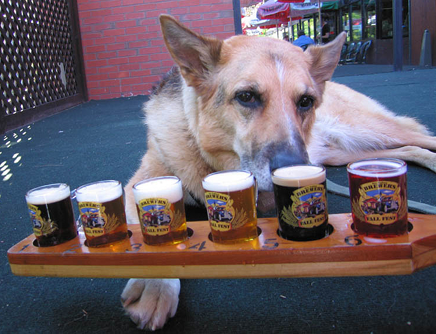

Welcome to San Diego.
This website will have information about dog-friendly breweries in San Diego!
Photo credit Vermont Brewery
Click here for a map of breweries.
Table of Importance
Here is a table that lists if dogs are allowed at certain breweries.
| Brewery Name | Location | Dogs Allowed |
|---|---|---|
| Stone Brewery | Liberty Station | NO |
| Coronado Brewery | Knoxville | YES |
| Bitter Brothers Brewery | Morena | YES |
Here is a picture of a dog who loves beer!

Photo credit Dog on Internet
List of top five dog-friendly breweries in San Diego.
- Coronado Brewery on Knoxville
- Bitter Brothers Brewery on Morena
- Helms Brewery
- Society Brewery
- Duck Foot Brewing near Miramar Rd
If you would like to see another picture of a dog, click here.
If you would like to see an awesome website about dogs and beer click here.
The beerpaws.com website looks really organized. It has comments so you can clearly read what's going on.